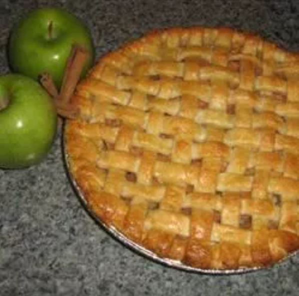

Honey Pie recipe

Description:
A picturesque as well as delicious apple pie
Ingredients:
- 2 ½ cups all-purpose flour
- 2 tablespoons white sugar
- 1 teaspoon salt
- ½ cup butter, chilled and diced
- ½ cup shortening, chilled and diced
- 5 tablespoons ice water
-
6 Golden Delicious apples - peeled,
cored and cut into 1/4 inch slices
- ¼ teaspoon ground cinnamon
- ¼ cup white sugar
- ½ cup light brown sugar
- ¼ cup all-purpose flour
- ½ teaspoon ground nutmeg
- ¼ teaspoon ground allspice
- ½ cup white sugar
- 1 tablespoon lemon juice
- 1 teaspoon vanilla extract
- 2 tablespoons dark rum
- 2 tablespoons milk
- 1 tablespoon white sugar
Steps:
-
Preheat oven to 375°. On a lightly floured surface, roll half of the
dough
to a 1/8-in.-thick circle; transfer to a 9-in. pie plate. Chill while
preparing filling. In a small bowl, combine sugars, flour and spices. In
a
large bowl, toss apples with lemon juice. Add sugar mixture; toss to
coat. Add
filling; dot with butter.
-
Roll remaining dough to a 1/8-in.-thick circle. Place over filling.
Trim, seal and flute edge. Cut slits in top. Beat egg white until foamy;
brush over crust. If desired, sprinkle with turbinado sugar and ground
cinnamon.
-
Bake on the lowest rack 60-70 minutes, until crust is golden brown and
filling is bubbly, covering with foil halfway if crust begins to get too
dark.
Cool on a wire rack. If desired, serve with ice cream and caramel sauce.
Return back